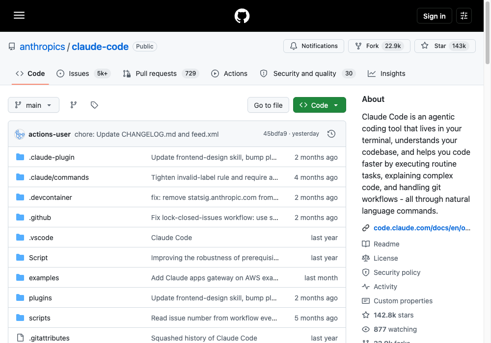
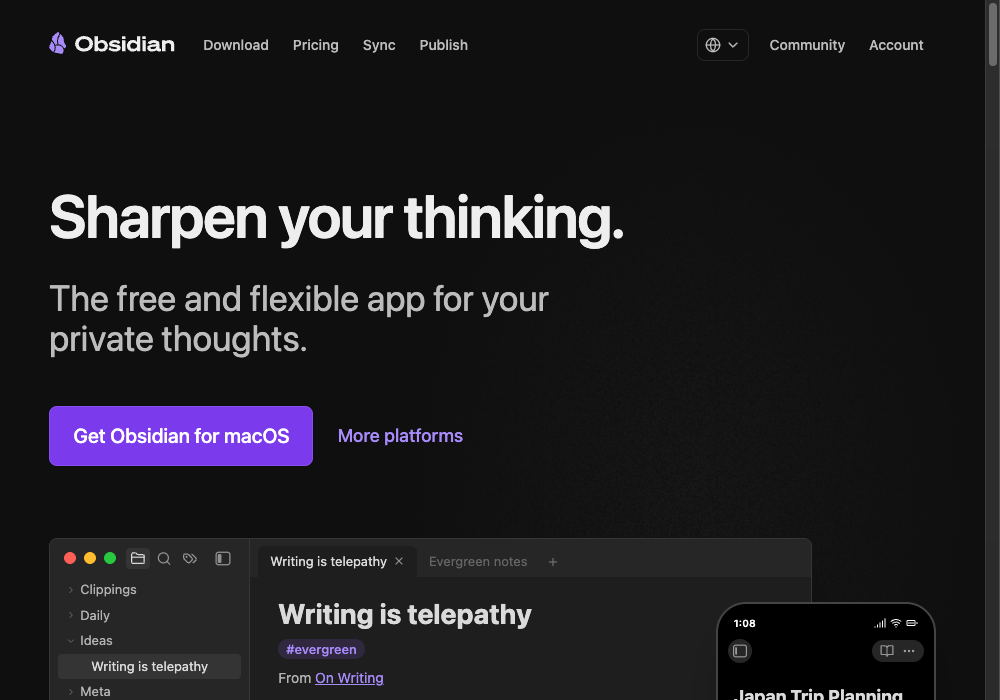
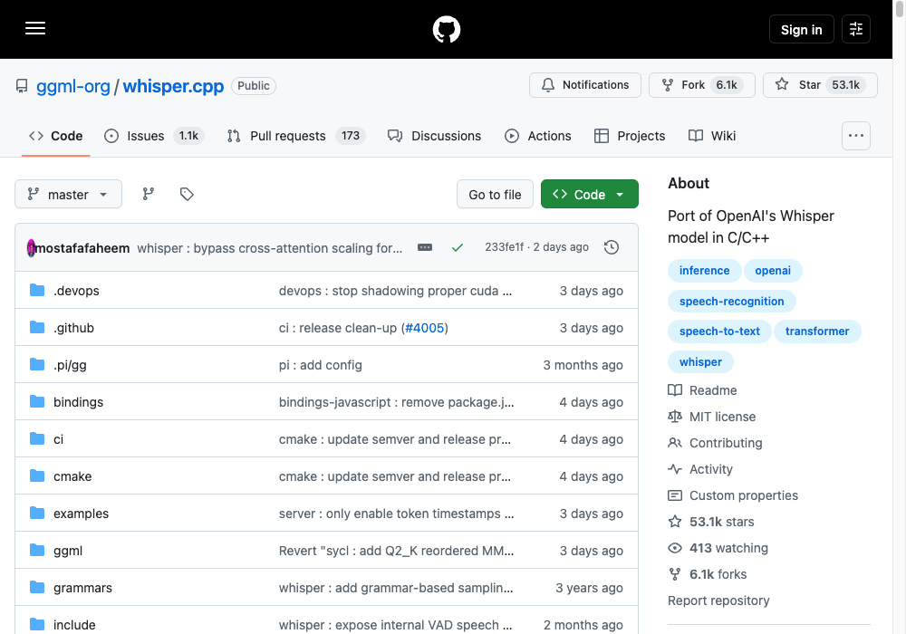
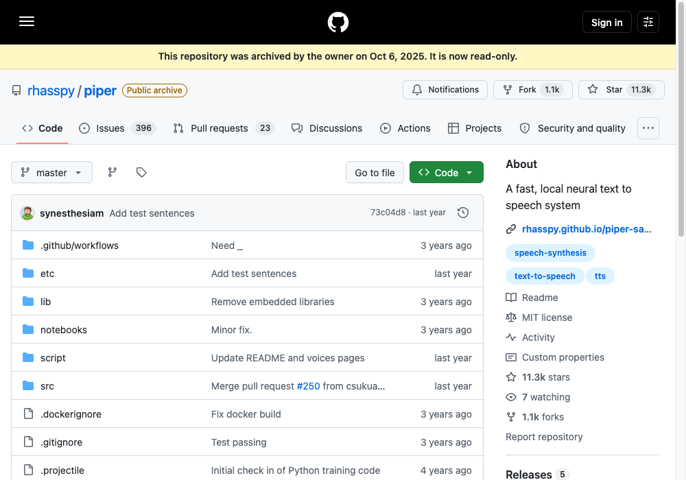

Build Your JARVIS OS
The 4-step build — by the last step, it runs your whole day.
You speak. JARVIS routes the work.
Old way: you drive every tool by hand — tabs, typing, lost context. New way: one voice layer. Speak, the right skill runs, the answer comes back out loud.
| Part | What it does |
|---|---|
| Claude Code | The engine. Routes every request to the right skill. |
| Obsidian | The memory. Everything lands as linked markdown. |
| Local voice | The ears + mouth. STT in, TTS out — 100% private. |
| The HUD | The face. One screen for vitals, schedule, commands. |
Wire the brain.
Claude Code + a folder of skills. Each skill is one SKILL.md file, pulled in only when it's needed.

Your first five skills — small, single-purpose beats one giant prompt:
~/.claude/skills/ metrics/SKILL.md # pulls your numbers inbox/SKILL.md # the morning brief trends/SKILL.md # scans what's moving plan/SKILL.md # writes today's top 3 vault/SKILL.md # reads + writes memory
Build the memory.
If it's not in the vault, it didn't happen. The vault itself lives in Obsidian:

vault/ raw/ # everything captured, untouched wiki/ # distilled knowledge, cross-referenced outputs/ # everything shipped
Every report lands as markdown — no database. Notes link into a graph (the Karpathy system), JARVIS queries that graph to answer fast, and you can read everything it knows because it's just files.
obsidian.md → · full wiring instructions in the Obsidian × Claude Code guide.
Add the voice.
Your audio never leaves the machine. Push to talk — hold space, speak. Local STT hears you, local TTS answers out loud. Free forever, private by default, no API latency.
The guide is model-agnostic by design — swap any local STT/TTS pair you like. Two real, widely-used starting points:
whisper.cpp — local speech-to-text

github.com/ggml-org/whisper.cpp →
Piper — local text-to-speech

Build the face.
One screen. Everything JARVIS knows. Go to Claude Code and use this prompt:
Build a dark terminal HUD for my OS: system vitals · command deck · schedule · audio I/O · live data from the vault. One screen. No tabs.
Hit run. Open it. Tweak it by voice.
Your voice is the interface.
| Time | What happens |
|---|---|
| 7:00 AM | "Morning brief." Inbox, calendar, AI news — read out loud. |
| 9:00 AM | "Plan today." Top 3 priorities land in the vault. |
| 2:00 PM | "Metrics pull." Subs, views, followers — tracked. |
| 7:00 PM | "Close the day." Reflection logged. Tomorrow queued. |
| Anytime | "Ask anything." The vault remembers everything. |
Consistency compounds.
Want a self-improving engine and higher-fidelity voice instead, and don't mind a paid API? See the Hermes Agent + ElevenLabs edition.